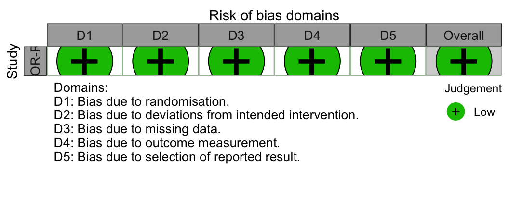
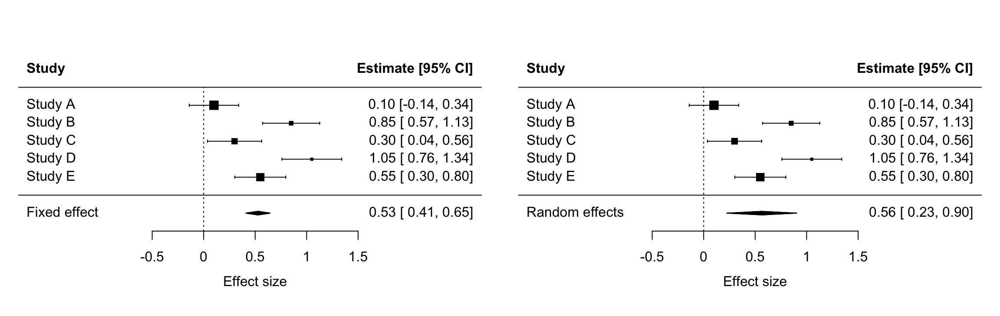
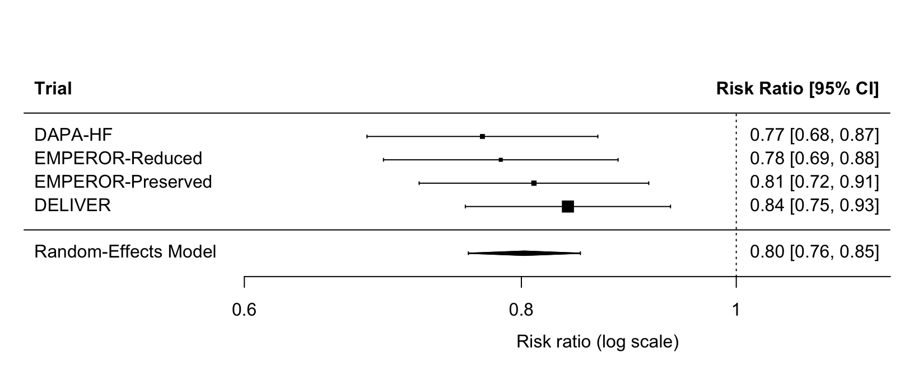
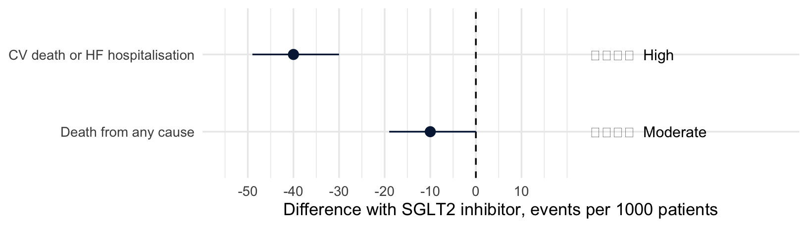

Code
rob_traffic_light(data.frame(Study = "EMPEROR-Reduced", D1 = "Low", D2 = "Low",
D3 = "Low", D4 = "Low", D5 = "Low", Overall = "Low"),
tool = "ROB2")
By the end of this chapter you should be able to:
R packages: dplyr, ggplot2, metafor, robvis, knitr.
Chapter 5 introduced risk-of-bias tools and the GRADE framework. This chapter applies GRADE domain by domain to a real body of evidence and shows how the result is presented in a summary-of-findings table. Chapter 7 turns from the evidence to the review itself: how it is reported (PRISMA 2020), how it was conducted (AMSTAR 2), whether its conclusions are at risk of bias (ROBIS), and whether they say more than the evidence allows (spin).
The exercise at the end of Chapter 5 asked for a RoB 2 assessment of the primary outcome of EMPEROR-Reduced, which randomised 3730 patients with heart failure and reduced ejection fraction to empagliflozin or placebo (1). One reasonable assessment, domain by domain:
rob_traffic_light(data.frame(Study = "EMPEROR-Reduced", D1 = "Low", D2 = "Low",
D3 = "Low", D4 = "Low", D5 = "Low", Overall = "Low"),
tool = "ROB2")
The contrast with STRIDE (Section 5.6.4) is instructive. Both trials were industry funded and double blind; the difference lies in the outcome. Adjudicated clinical events, ascertained in almost everyone, are much less vulnerable than a performance test that a sixth of participants did not complete. Funding source is recorded, but is not by itself a reason to judge a result at high risk of bias.
We use the four large trials of SGLT2 inhibitors in heart failure introduced in Section 3.7, with two outcomes: the composite of cardiovascular death or hospitalisation for heart failure (each trial’s primary outcome), and death from any cause (1–4).
sglt2 <- data.frame(
study = c("DAPA-HF", "EMPEROR-Reduced", "EMPEROR-Preserved", "DELIVER"),
n_I = c(2373, 1863, 2997, 3131),
n_C = c(2371, 1867, 2991, 3132),
comp_I = c(386, 361, 415, 512), # CV death or HF hospitalisation
comp_C = c(502, 462, 511, 610),
acm_I = c(276, 249, 422, 497), # death from any cause
acm_C = c(329, 266, 427, 526))
kable(sglt2, col.names = c("Trial", "N SGLT2i", "N placebo", "Composite SGLT2i",
"Composite placebo", "Deaths SGLT2i", "Deaths placebo"))| Trial | N SGLT2i | N placebo | Composite SGLT2i | Composite placebo | Deaths SGLT2i | Deaths placebo |
|---|---|---|---|---|---|---|
| DAPA-HF | 2373 | 2371 | 386 | 502 | 276 | 329 |
| EMPEROR-Reduced | 1863 | 1867 | 361 | 462 | 249 | 266 |
| EMPEROR-Preserved | 2997 | 2991 | 415 | 511 | 422 | 427 |
| DELIVER | 3131 | 3132 | 512 | 610 | 497 | 526 |
comp <- escalc(measure = "RR", ai = comp_I, n1i = n_I, ci = comp_C, n2i = n_C,
data = sglt2, slab = study)
acm <- escalc(measure = "RR", ai = acm_I, n1i = n_I, ci = acm_C, n2i = n_C,
data = sglt2, slab = study)
res_comp <- rma(yi, vi, data = comp, method = "REML")
res_acm <- rma(yi, vi, data = acm, method = "REML")The risk-of-bias domain is judged for each outcome across all the studies contributing to it, and by their weight in the analysis rather than their number (5). Three small trials at high risk contributing 5% of the weight matter far less than one large trial at high risk contributing 60%. A practical rule: if studies carrying most of the weight are at high risk, or at some concerns in a way that plausibly affects the result, rate down by one level; rate down by two only if the limitations are severe and dominate the evidence.
Common errors are to rate down for lack of blinding regardless of the outcome (it matters far more for subjective outcomes than for death), to rate down because a trial was open label without asking whether this plausibly affected the result, to confuse study-level and outcome-level risk of bias, and to penalise the same weakness twice in different domains.
All four SGLT2 inhibitor trials were large, double blind and placebo controlled, with adjudicated outcomes and near-complete follow-up: no serious risk of bias for either outcome.
Judging inconsistency requires the two basic models for pooling, which are developed fully in Chapter 9. Under the fixed-effect (or common-effect) model, every study estimates the same true effect, and differences between studies are due to sampling error alone; each study is weighted by the inverse of its variance, \(w_i = 1/v_i\). Under the random-effects model, each study estimates its own true effect, and these effects vary around a mean with between-study variance τ²; the weights become \(w_i = 1/(v_i + \tau^2)\), so large studies dominate less, and the confidence interval for the mean widens to reflect the heterogeneity.
Figure 6.2 fits both models to five hypothetical studies whose results differ more than chance would explain.
toy <- data.frame(study = paste("Study", LETTERS[1:5]),
yi = c(0.10, 0.85, 0.30, 1.05, 0.55),
vi = c(0.015, 0.020, 0.018, 0.022, 0.016))
fe_toy <- rma(yi, vi, data = toy, method = "FE", slab = study)
re_toy <- rma(yi, vi, data = toy, method = "REML", slab = study)
par(mfrow = c(1, 2))
forest(fe_toy, header = "Study", xlab = "Effect size", mlab = "Fixed effect",
xlim = c(-1.8, 2.7), alim = c(-0.5, 1.5))
forest(re_toy, header = "Study", xlab = "Effect size", mlab = "Random effects",
xlim = c(-1.8, 2.7), alim = c(-0.5, 1.5))
The individual studies are identical in both panels; only the summary changes, from 0.53 (0.41 to 0.65) to 0.56 (0.23 to 0.90). The fixed-effect interval answers a question these studies cannot honestly answer: what is the one effect they all share?
When τ² is estimated as zero, the random-effects model reduces exactly to the fixed-effect model. Defaulting to random effects therefore costs little when heterogeneity is absent, whereas defaulting to fixed effect understates uncertainty when it is present. Random effects (with REML estimation) is the usual default; the fixed-effect model needs a specific justification.
A 1999 meta-analysis of circumcision and HIV infection simply added up events and participants across 29 studies of very different sizes and designs, and found circumcised men at slightly higher risk (OR 1.06, 95% CI 1.01 to 1.12) (6). Reanalysing the same studies by comparing men within each study and then pooling reversed the direction (7), and a systematic review of 27 studies in sub-Saharan Africa found circumcised men at about half the risk (RR 0.52, 0.40 to 0.68) (8). Three later randomised trials confirmed a protective effect of about 50% to 60%. Pooling raw counts across studies discards the comparison within each study and invites Simpson’s paradox.
Inconsistency means unexplained heterogeneity in the results (9). If the variation can be explained by a pre-specified effect modifier, it is reported as such, not penalised.
Four statistics are commonly reported:
\[ \hat\mu \pm t_{k-2,\,0.975}\sqrt{\hat\tau^2 + \text{SE}(\hat\mu)^2}. \]
The prediction interval is the most clinically useful of the four, because it is on the scale of the effect: it tells a reader what to expect in their own setting.
pi_comp <- predict(res_comp, transf = exp)
pi_acm <- predict(res_acm, transf = exp)
het <- data.frame(
Outcome = c("CV death or HF hospitalisation", "Death from any cause"),
RR = c(pi_comp$pred, pi_acm$pred),
CI = sprintf("%.2f to %.2f", c(pi_comp$ci.lb, pi_acm$ci.lb), c(pi_comp$ci.ub, pi_acm$ci.ub)),
PI = sprintf("%.2f to %.2f", c(pi_comp$pi.lb, pi_acm$pi.lb), c(pi_comp$pi.ub, pi_acm$pi.ub)),
Q_p = c(res_comp$QEp, res_acm$QEp),
I2 = c(res_comp$I2, res_acm$I2),
tau2 = c(res_comp$tau2, res_acm$tau2))
kable(het, digits = c(0, 2, 0, 0, 2, 0, 4),
col.names = c("Outcome", "Pooled RR", "95% CI", "95% PI", "P (Q)", "I² (%)", "τ²"))| Outcome | Pooled RR | 95% CI | 95% PI | P (Q) | I² (%) | τ² |
|---|---|---|---|---|---|---|
| CV death or HF hospitalisation | 0.80 | 0.76 to 0.85 | 0.76 to 0.85 | 0.71 | 0 | 0 |
| Death from any cause | 0.93 | 0.87 to 1.00 | 0.87 to 1.00 | 0.42 | 0 | 0 |
For both outcomes the results of the four trials are compatible with a single effect: τ² is estimated as zero, so the random-effects model has reduced to the fixed-effect model, and metafor’s prediction interval coincides with the confidence interval. (By default metafor uses the normal distribution; the formula above, with a t distribution on k − 2 = 2 degrees of freedom, would give a much wider interval with so few studies, an honest reminder of how little four studies say about heterogeneity.) Figure 6.3 shows the composite outcome with its prediction interval, drawn by addpred = TRUE.
forest(res_comp, atransf = exp, addpred = TRUE, header = "Trial",
at = log(c(0.6, 0.8, 1, 1.25)), xlab = "Risk ratio (log scale)")
With four studies, Q has very little power. τ² = 0 is the best estimate, but a modest true heterogeneity cannot be excluded. This is one reason to report the prediction interval rather than rely on the P value for Q.
For a contrast, return to the BCG vaccine trials of Section 4.3.
bcg <- rma(measure = "RR", ai = tpos, bi = tneg, ci = cpos, di = cneg,
data = dat.bcg, method = "REML")
pi_bcg <- predict(bcg, transf = exp)Here the pooled risk ratio is 0.49 (95% CI 0.34 to 0.70), clearly favouring vaccination, but I² = 92% and the 95% prediction interval runs from 0.15 to 1.55. The average effect is real, but in a new setting the vaccine might do little or nothing. Three situations are worth distinguishing:
There is no fixed I² threshold for rating down. GRADE asks whether point estimates vary widely, whether confidence intervals overlap, whether results fall on both sides of a decision threshold, and whether the heterogeneity is unexplained (9). Conventional bands (I² below 40% might not be important, 30% to 60% moderate, 50% to 90% substantial, above 75% considerable) overlap deliberately (11).
Judgement for the SGLT2 inhibitor trials: no serious inconsistency for either outcome.
Evidence is indirect when it differs from the question in any element of PICO (12):
Rate down by one level when the differences make it genuinely uncertain whether the findings apply, and by two when the differences are large. For surrogate outcomes, the degree of rating down depends on how well the surrogate has been shown to predict the patient-important outcome for this kind of intervention.
After myocardial infarction, frequent ventricular ectopic beats predict sudden death, and encainide and flecainide suppress them very effectively. By the late 1980s these drugs were widely prescribed on the strength of the surrogate. The Cardiac Arrhythmia Suppression Trial randomised patients with asymptomatic ectopy after infarction to these drugs or placebo. The drugs suppressed the ectopy, as expected, but there were 56 deaths in the active arm and 22 with placebo, and the trial was stopped early (13). A plausible, measurable, drug-responsive surrogate pointed in exactly the wrong direction.
Judgement for the SGLT2 inhibitor trials: the outcomes are patient-important and the trials enrolled the populations of interest. If the review question were restricted to one ejection-fraction group, pooling all four trials would introduce some indirectness, a point a review should state explicitly.
Imprecision is judged from the confidence interval in relation to a decision threshold, supplemented by the optimal information size (OIS) (14).
The confidence interval. If the 95% CI includes values that would lead to different decisions — typically both an important benefit and no effect, or a threshold of minimal importance — rate down. An RR of 0.88 (95% CI 0.70 to 1.10) is imprecise for most purposes; 0.88 (0.81 to 0.96) usually is not. Conversely, a wide interval need not be penalised if every value in it would lead to the same decision.
The optimal information size. Even when the CI excludes no effect, a small body of evidence can produce implausibly large and unstable estimates. The OIS is the number of participants a single adequately powered trial would need to detect a plausible effect. For a binary outcome, with control-group risk \(p_C\) and intervention-group risk \(p_I\), the number per arm is
\[ n = \frac{(z_{1-\alpha/2} + z_{1-\beta})^2\,[p_C(1-p_C) + p_I(1-p_I)]}{(p_C - p_I)^2}. \]
If the total number of participants in the meta-analysis is well below the OIS, rate down, whatever the confidence interval shows.
ois_binary <- function(p_C, RR, alpha = 0.05, power = 0.80) {
p_I <- p_C * RR
z <- qnorm(1 - alpha / 2) + qnorm(power)
ceiling(z^2 * (p_C * (1 - p_C) + p_I * (1 - p_I)) / (p_C - p_I)^2) # per arm
}
p_C_comp <- sum(sglt2$comp_C) / sum(sglt2$n_C) # pooled control-group risk
p_C_acm <- sum(sglt2$acm_C) / sum(sglt2$n_C)
n_total <- sum(sglt2$n_I + sglt2$n_C)
ois <- data.frame(
Outcome = c("CV death or HF hospitalisation", "Death from any cause"),
p_C = c(p_C_comp, p_C_acm),
RR = c(pi_comp$pred, pi_acm$pred),
OIS = 2 * c(ois_binary(p_C_comp, pi_comp$pred), ois_binary(p_C_acm, pi_acm$pred)),
N = n_total)
kable(ois, digits = c(0, 3, 2, 0, 0),
col.names = c("Outcome", "Control risk", "Pooled RR", "OIS (total)", "N in review"),
format.args = list(big.mark = ","))| Outcome | Control risk | Pooled RR | OIS (total) | N in review |
|---|---|---|---|---|
| CV death or HF hospitalisation | 0.201 | 0.80 | 2,944 | 20,725 |
| Death from any cause | 0.149 | 0.93 | 38,830 | 20,725 |
For the composite outcome the review includes 20,725 patients against an OIS of 2,944, and the confidence interval is narrow: no serious imprecision. For death from any cause, the OIS for an effect as small as the one observed (RR 0.93) is 38,830, more than the number of patients available, and the confidence interval runs from 0.87 to 1.00, close to no effect at its upper limit. Whether to rate down depends on the decision threshold: if any reduction in mortality would change practice, the evidence is reasonably precise; if only a reduction of, say, 10% or more would, the interval includes both important and unimportant effects, and rating down by one level for serious imprecision is justified.
The OIS asks whether there is enough information that a new trial would be unlikely to overturn the conclusion. A statistically significant result below the OIS is a preliminary result.
Publication bias, and the other non-reporting biases of Section 5.4, are suspected when (15):
Rating down is usually by one level; two is rarely justified. With fewer than 10 studies, funnel plots and their tests are not informative, and the judgement rests on the search and on the registers. For the SGLT2 inhibitor question, the four trials are large, registered and fully published, and no completed but unpublished trial of comparable size is known: publication bias undetected.
Two problems deserve emphasis because they can affect a whole body of randomised evidence rather than a single trial.
Attrition. Randomisation makes the groups comparable at baseline; it does not keep them comparable if participants drop out for reasons related to treatment or prognosis. With substantial, differential or outcome-related losses, the comparison at follow-up is no longer between randomised groups, and imputation cannot fully restore it. When reading a meta-analysis, check the losses in each arm of each trial, whether the reasons are reported, whether heterogeneity tracks the attrition rate, and whether a sensitivity analysis restricted to trials with little missing data agrees with the main result (16).
Sponsorship and selective reporting. Industry-sponsored studies are more likely to reach conclusions favourable to the sponsor (OR 3.60, 95% CI 2.63 to 4.91, in one systematic review) (17). When antidepressant trials submitted to the US Food and Drug Administration were compared with the published literature, 94% of published trials appeared positive, against 51% according to the FDA’s own analyses, and the apparent effect size was inflated by about a third (18). In a cohort of trials, 62% had at least one primary outcome changed, introduced or omitted between protocol and publication (19). None of this requires fabrication: comparator choice, run-in periods that exclude poor responders, composite outcomes, the analysis population and selective publication are enough. Record each trial’s funding, compare registered and reported outcomes, and search registers for trials that were never published.
A summary-of-findings (SoF) table is the main output of GRADE: for each important outcome it shows the number of studies and participants, the relative effect, the absolute effect, the certainty of the evidence and the reasons for any rating down (20). Absolute effects require an assumed baseline risk, ideally that of the population to whom the review will be applied:
\[ \text{Risk difference} = p_C \times (\text{RR} - 1). \]
The same relative effect implies very different absolute benefits in high-risk and low-risk populations, so SoF tables often show more than one baseline risk.
per1000 <- function(p_C, rr) round(1000 * p_C * (rr - 1))
sof <- data.frame(
Outcome = c("CV death or HF hospitalisation", "Death from any cause"),
Studies = sprintf("4 RCTs; %s patients", format(n_total, big.mark = ",")),
Relative = sprintf("RR %.2f (%.2f to %.2f)",
c(pi_comp$pred, pi_acm$pred), c(pi_comp$ci.lb, pi_acm$ci.lb),
c(pi_comp$ci.ub, pi_acm$ci.ub)),
Control = sprintf("%.0f per 1000", 1000 * c(p_C_comp, p_C_acm)),
Absolute = sprintf("%d per 1000 (%d to %d)",
c(per1000(p_C_comp, pi_comp$pred), per1000(p_C_acm, pi_acm$pred)),
c(per1000(p_C_comp, pi_comp$ci.lb), per1000(p_C_acm, pi_acm$ci.lb)),
c(per1000(p_C_comp, pi_comp$ci.ub), per1000(p_C_acm, pi_acm$ci.ub))),
Certainty = c("⊕⊕⊕⊕ High", "⊕⊕⊕◯ Moderate"),
Reason = c("", "Rated down once for imprecision: CI includes effects too small to matter"))
kable(sof, col.names = c("Outcome", "Studies and participants", "Relative effect (95% CI)",
"Risk with placebo", "Difference with SGLT2i", "Certainty", "Comments"))| Outcome | Studies and participants | Relative effect (95% CI) | Risk with placebo | Difference with SGLT2i | Certainty | Comments |
|---|---|---|---|---|---|---|
| CV death or HF hospitalisation | 4 RCTs; 20,725 patients | RR 0.80 (0.76 to 0.85) | 201 per 1000 | -40 per 1000 (-49 to -30) | ⊕⊕⊕⊕ High | |
| Death from any cause | 4 RCTs; 20,725 patients | RR 0.93 (0.87 to 1.00) | 149 per 1000 | -10 per 1000 (-19 to 0) | ⊕⊕⊕◯ Moderate | Rated down once for imprecision: CI includes effects too small to matter |
A summary-of-findings table answers two separate questions for each outcome: how large is the effect? and how sure are we? A cartoon by Leo Garel, often shown in GRADE workshops, makes the point with a weather forecaster who gives the chance of showers and, separately, the chance that he knows what he is talking about. Figure 6.4 shows both answers for the SGLT2 inhibitor outcomes.
sof_plot <- data.frame(
outcome = factor(c("CV death or HF hospitalisation", "Death from any cause"),
levels = rev(c("CV death or HF hospitalisation", "Death from any cause"))),
est = c(per1000(p_C_comp, pi_comp$pred), per1000(p_C_acm, pi_acm$pred)),
lo = c(per1000(p_C_comp, pi_comp$ci.lb), per1000(p_C_acm, pi_acm$ci.lb)),
hi = c(per1000(p_C_comp, pi_comp$ci.ub), per1000(p_C_acm, pi_acm$ci.ub)),
certainty = c("\u2295\u2295\u2295\u2295 High", "\u2295\u2295\u2295\u25ef Moderate"))
xmax <- max(sof_plot$hi) + 25
ggplot(sof_plot, aes(est, outcome)) +
geom_vline(xintercept = 0, linetype = "dashed") +
geom_pointrange(aes(xmin = lo, xmax = hi), colour = "#041E42") +
geom_text(aes(x = xmax, label = certainty), hjust = 0, size = 4) +
scale_x_continuous(limits = c(min(sof_plot$lo) - 5, xmax + 40),
breaks = seq(-50, 10, 10)) +
labs(x = "Difference with SGLT2 inhibitor, events per 1000 patients", y = NULL)
Negative differences are fewer events with an SGLT2 inhibitor. The absolute effects use the pooled control-group risks of the trials; in a population at lower risk the same relative effects would prevent fewer events. Packages such as gt produce more elaborately formatted tables, and GRADEpro GDT builds SoF tables interactively, but the content is what matters: every outcome, absolute as well as relative effects, and the reason for every rating.
ois_binary(), compute the OIS for detecting a 10% relative reduction in all-cause mortality, with the control-group risk of these trials. How does your judgement of imprecision change?